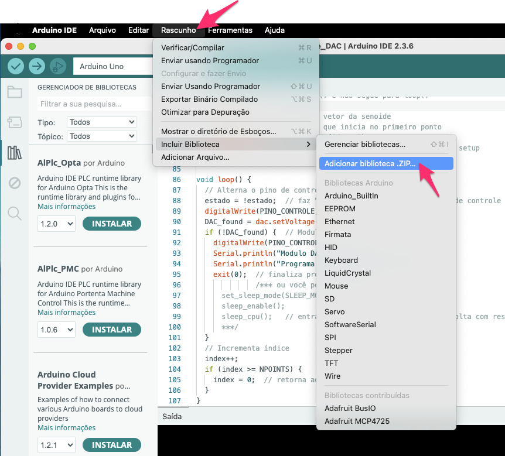
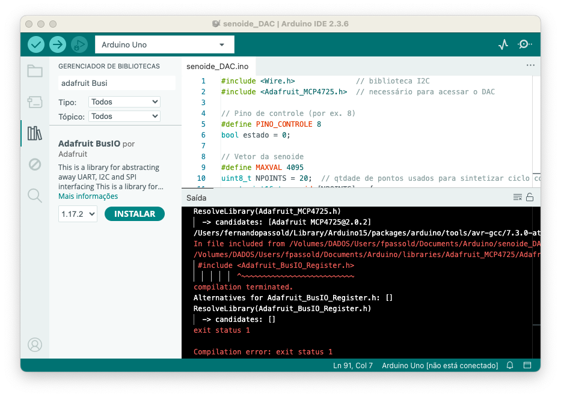

Lab 3) Gerador de Senóide usando DAC
A idéia agora é usar um DAC real, placa sugerida: módulo DAC MPC 4725 que é de 12-bits. Isto implica que esta placa aceita valores variando na faixa ìnt de 0 até 4025 (). Esta placa trabalha com comunicação I2C. Ver página Trabalhar com o Módulo DAC, para ver maiores detalhes e saber como instalar o driver para esta placa na IDE do Arduino.
Lab 3) Gerador de Senóide usando DACObjetivoProcedimentoHardware necessarioMontagem sugeridaDetalhes de SoftwareDicasDica #2Teste de "Desempenho Puro"AnexosA. Instalação da Biblioteca Adafruit MCP4725B. Em caso de erro associado com "Adafruit_BusIO_Register.h"
Objetivo
Tentar gerar uma onda senoidal o mais rápido possível usando placa Arduino Uno e ISR para garantir sua frequência.
Procedimento
Programar uma ISR para rodar com taxa de amostragem de 10 KHz.
Programar a rotina ISR para gerar 20 ou 10 pontos de uma seníde.
Comprovar usando osciloscópio:
- A frequência da seníde sendo gerada (Canal 1 do osciloscópio);
- O tempo de processamento decorrido com a ISR. Para tanto, no início da ISR "subir" o nível lógico de certo pino do Arduíno e uma vez saindo da ISR, "baixar" o nível lógico neste pino. Se esta saída for verificada no osciloscópio (Canal 2), deve ser comprovada a frequência de amostragem de 10 KHz e o correspondente "duty-cycle" vai corresponder ao tempo de processamento dedicado à ISR. Tentar medir este valor.
Montar relatório final documentando:
- Ligações elétricas efetuadas;
- Cálculos dos registradores/timers associados com a ISR para gerar a taxa de interrupção à 10 KHz.
- Explicar a forma como foram sintetizados os pontos da senóide;
- Mostrar os gráficos capturados via osciloscópio.
Hardware necessario
- Placa Arduino Uno;
- Módulo DAC MCP4725;
- Resistor de 10 K;
- Capacitor de 3,3 nF;
- Transistor IRF640;
- Alto-falante de 8 250 mW;
- Cabos conectores;
- Mini proto-board.
Montagem sugerida
Fixar o módulo DAC no Proto-board;
Realizar as devidas conexões ao DAC:
Pino no
DACPino no
ArduínoVcc Algum pino Vcc GND GND SDA (Data) A4 SCL (Clock) A5 * VOUT Saída analógica
[0 .. 5 Volts ]
* pino A5 do Arduino (aparentemente já contêm resistor pullup de 10K para 5 Volts no DAC, e esta saída já trabalha com um sinal de 440 KHz).
Diagrama elétrico:

Detalhe da ligação do IRF640 ao alto-falante:
Detalhes de Software
Será necessário programar a ISR para ser chamada na taxa de 10 KHz, ou a cada: segundos ou à cada 0,1 ms. Lembre que o clock do Arduíno Uno normalmente é de 16 MHz e considere que seu uP gasta 4 ciclos de clock para executar uma instrução (típico de processadores RISC), o que significa que cada instrução mínima leva segundos para ser executada ou 0,375 ms. Ou seja, sim, estamos tentando colocar o Arduíno no limite de sua capacidade de processamento.
A fim de reduzir custos computacionais, se sugere que o próprio Arduíno no bloco
void setup() {...}calcule os NPOINTS necessários para gerar os pontos da senóide e os armazene num array (deverá ser uma variável global). Considerar que devem ser gerados valoresintna faixa de [0, 4095] que correspondem aos 12-bits do DAC sendo usado.A rotina ISR deve bem "enxuta", isto é, exigir o menor esforço computacional possível e realizar apenas 3 coisas:
- Enviar para o DAC o valor atual do vetor que armazena os pontos da senóide;
- Incrementar o índice que aponta para a próxima posição neste vetor;
- Testar se alcançou o fim do vetor (NPOINTS) e se sim, voltar o (valor do) índice à zero.
- Não esquecer de alternar o nível lógico de um pino qualquer do Arduíno para verificar com auxílio do osciloscópio se a rotina ISR está realmente sendo executada na taxa requerida e quanto de processamento ocupa a mesma.
Realizar testes, documentando os resultados. O ideal seria apresentar um gráfico obtido com auxílio do osciloscópio que mostre no canal 1, a onda senoidal sendo gerada e no canal 2, o pino que muda de estado indicando a execução da ISR.
Dicas
Para minimizar o esforço computacional dentro da ISR, é melhor evitar if pesados e usar o operador módulo (%) apenas se o compilador não transformar isso em instruções mais simples. Outra alternativa é um teste condicional simples (que tende a ser mais rápido em uC's sem divisão rápida).
Segue sugestão de código compacto em C:
xxxxxxxxxx// Suponha que esta seja a interface do DACextern void dac_setVoltage(uint16_t valor);// Vetor de até 20 pontosvolatile uint16_t vetor[MAX_POINTS]; // variável globalvolatile uint8_t NPOINTS = 0; // quantidade de pontos válidos// Índice atualvolatile uint8_t index = 0; // variável global// --- Rotina de interrupção (ISR) ---void ISR_timer(void) { // 1. Envia valor atual para o DAC dac_setVoltage(vetor[index]); // 2. Incrementa índice index++; // 3. Se chegou no fim, volta para zero if (index >= NPOINTS) { index = 0; }}Observações:
- O código acima é apenas um exemplo e não pode, assim como foi apresentado, ser diretamente aplicado no Arduino! Use como exemplo.
indexeNPOINTSforam definidos comouint8_tporque o vetor tem no máximo 20 pontos. Assim, evita-se variáveis maiores que o necessário.- A checagem do "overflow" (
if (index >= NPOINTS)) é muito leve e geralmente mais rápida que usar:index = (index+1) % NPOINTS;principalmente em uC's pequenos (como AVR do Arduino). volatilefoi usado porque tantoindexquantoNPOINTSpodem ser acessados dentro e fora da ISR.- A ISR deve ser o mais curta possível, sempre, sem chamadas extras nem operações desnecessárias.
Dica #2
Existe uma forma ainda mais rápida de exceutar a ISR, mas envolve o uso de "máscara binária" e só funciona se NPOINTS for compatível com potência de 2. Por exemplo, suponha que NPOINT = 16, então podemos fazer algo como:
xxxxxxxxxx// potência de 2volatile uint16_t vetor[NPOINTS];volatile uint8_t index = 0;void ISR_timer(void) { dac_setVoltage(vetor[index]); index = (index + 1) & MASK; // volta automaticamente para 0}Nesse caso não há if nem divisão, só uma operação AND bit a bit. Mas para isto NPOINTS deve ser potência de 2.
Teste de "Desempenho Puro"
Outro teste que poderia ser realizado, mas que não garante nenhum compromisso com a taxa de amostragem, seria usar a seção void loop() {..} do Arduíno apenas para comandar o DAC e atualizar a variável índice do vetor. Eventualmente se poderia acrescentar neste código, instrução para alternar o nível de algum pino de "controle" do Arduino, assim, usando o osciloscópio, se poderia comprovar a máxima frequência da senóide possível de ser gerada (canal 1). E no canal 2 do osciliscópio, conectado no pino de controle seria observada uma onda quadrada cujos ciclos (em nível lógico baixo e em nível lógico alto) corresponderiam ao tempo gasto pela Arduíno para processar esta seção de código. Este teste resultaria algo como:
xxxxxxxxxx// Fernando Passold, em 27.08.2025// biblioteca I2C// necessário para acessar o DAC// Pino de controle (por ex. 8)bool estado = 0;// Vetor da senoide// associado com os 12-bits do DAC: 2^12-1=4095// qtdade de pontos usados para sintetizar ciclo completo senóideint senoide[NPOINTS] = { 2047, 2682, 3274, 3784, 4094, 4094, 3784, 3274, 2682, 2047, 1412, 820, 310, 0, 0, 310, 820, 1412, 2047, 2682}; // a inicialização deste vetor é opcional// variáveis associadas com o DACAdafruit_MCP4725 dac; // para instanciar o objeto "dac" pertencente a classe "Adafruit_MCP4725"int ender_DAC = 0x60; // endereço I2C do DACbool DAC_found = false; // indica problemas para acessar DAC// Índice do vetorint index = 0;// função para identificar DAC// Retorna true se módulo encontrado// caso contrário retorna falsebool found_DAC(void) { Serial.println(""); Serial.println("Buscando Módulo DAC MCP4725"); for (ender_DAC = 0x60; ender_DAC <= 0x65; ender_DAC++) { Serial.print("Testando endereço: 0x"); Serial.print(ender_DAC, HEX); DAC_found = dac.begin(ender_DAC); if (DAC_found) { Serial.println(" <-- Encontrado, Ok"); digitalWrite(PINO_CONTROLE, HIGH); break; // sai do for } Serial.println(""); return true; } if (!DAC_found) { Serial.println("Ops... Modulo DAC MCP4725 não encontrado"); return false; }}// Função que calcula pontos da senóide// Armazena no vetor senoide[] seus NPOINTSvoid gera_senoide() { Serial.println("Gerando pontos da Senoide:"); for (int i = 0; i < NPOINTS; i++) { double ang = 2.0 * M_PI * i / NPOINTS; senoide[i] = (int)(((sin(ang) + 1.0) * 0.5) * MAXVAL); Serial.print(senoide[i]); // Mostra valor gerado Serial.print(", "); // para próximo valor if ((i + 1) % 8 == 0) { Serial.println(); // quebra linha a cada 8 valores } } Serial.print("\b\b"); // backspace para apagar ", " Serial.println(); // Fim}void setup() { Serial.begin(115200); // ativa porta serial delay(100); // espera porta inicializar Serial.println(""); Serial.println("Programa para gerar Senoide"); Serial.println("* Teste de Desempenho Puro *"); pinMode(PINO_CONTROLE, OUTPUT); digitalWrite(PINO_CONTROLE, HIGH); //indica que estamos dentro da seção setup DAC_found = found_DAC(); if (!DAC_found) { // Modulo DAC MCP4725 não encontrado Serial.println("Programa sendo encerrado.. Sorry!"); return; // encerra setup() e não segue para loop() } gera_senoide(); // prepara vetor da senoide index = 0; // garante que inicia no primeiro ponto Serial.println("Iniciando senóide..."); digitalWrite(PINO_CONTROLE, LOW); // indica saída da seção setup}void loop() { // Alterna o pino de controle estado = !estado; // faz "toggle" no nível lógico do pino de controle digitalWrite(PINO_CONTROLE, estado); DAC_found = dac.setVoltage(senoide[index], false); if (!DAC_found) { // Modulo DAC MCP4725 desconectado! digitalWrite(PINO_CONTROLE, LOW); Serial.println("Modulo DAC MCP4725 foi desconectado"); Serial.println("Programa sendo encerrado.. Sorry!"); exit(0); // finaliza programa, não garantido no Arduíno /*** ou você pode tentar usar: set_sleep_mode(SLEEP_MODE_PWR_DOWN); sleep_enable(); sleep_cpu(); // entra em modo de baixo consumo e só volta com reset/interrupção ***/ } // Incrementa índice index++; if (index >= NPOINTS) { index = 0; // retorna ao início }}A execução deste código gera a seguine saída no terminal (porta serial):
xxxxxxxxxx< falta completar >
E gerou a seguinte forma de onda:
< faltou capturar tela >
Fim.
Anexos
A. Instalação da Biblioteca Adafruit MCP4725
Vá até a página https://github.com/adafruit/Adafruit_MCP4725, acesse o botão verde contendo " <> Code v " e com o botão direito do mouse sobre este botão, faça abrir um menu pull-down e selecione: , como mostra a figura abaixo:
Cliando em "Download ZIP" será baixado um arquivo compactado ZIP.
Basta ir para a IDE do Arduíno e buscar por: Menu >> Rascunho > Incluir Biblioteca > Adicionar biblioteca .ZIP..., como mostra a figura abaixo:

E então selecionar a pasta (provavelmente /Downloads) onde antes você baixou o arquivo zipado.
Pronto.
B. Em caso de erro associado com "Adafruit_BusIO_Register.h"
Em caso de erro do tipo:
xxxxxxxxxxResolveLibrary(Adafruit_MCP4725.h) -> candidates: [Adafruit MCP4725@2.0.2]fatal error: Adafruit_BusIO_Register.h: No such file or directory ^~~~~~~~~~~~~~~~~~~~~~~~~~~compilation terminated.Alternatives for Adafruit_BusIO_Register.h: []ResolveLibrary(Adafruit_BusIO_Register.h) -> candidates: []exit status 1Compilation error: exit status 1Esta mensagem de erro:
xxxxxxxxxx#include <Adafruit_BusIO_Register.h> ^~~~~~~~~~~~~~~~~~~~~~~~~~~~ compilação encerrada. Alternativas para Adafruit_BusIO_Register.h: [] ResolveLibrary(Adafruit_BusIO_Register.h)indica que o IDE do Arduino não conseguiu localizar o arquivo de cabeçalho especificado, Adafruit_BusIO_Register.h. Isso normalmente ocorre quando uma biblioteca necessária não está instalada ou não é reconhecida corretamente pela IDE.
Faltaria instalar a biblioteca faltante:
- Abra o IDE do Arduino.
- Navegue até Menu >> Rascunho > Incluir Biblioteca > Gerenciar Bibliotecas...
- Na janela Gerenciador de Bibliotecas, procure por "Adafruit BusIO".
- Localize a biblioteca "Adafruit BusIO" nos resultados da pesquisa e clique no botão "Instalar": 
- Se recomenda re-iniciar o Arduino IDE e recompilar o código.
Fernando Passold, em 27/08/2025